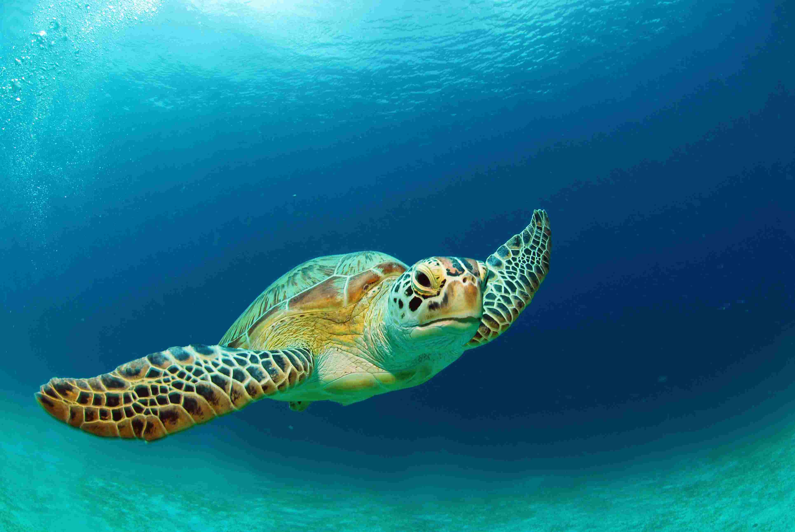
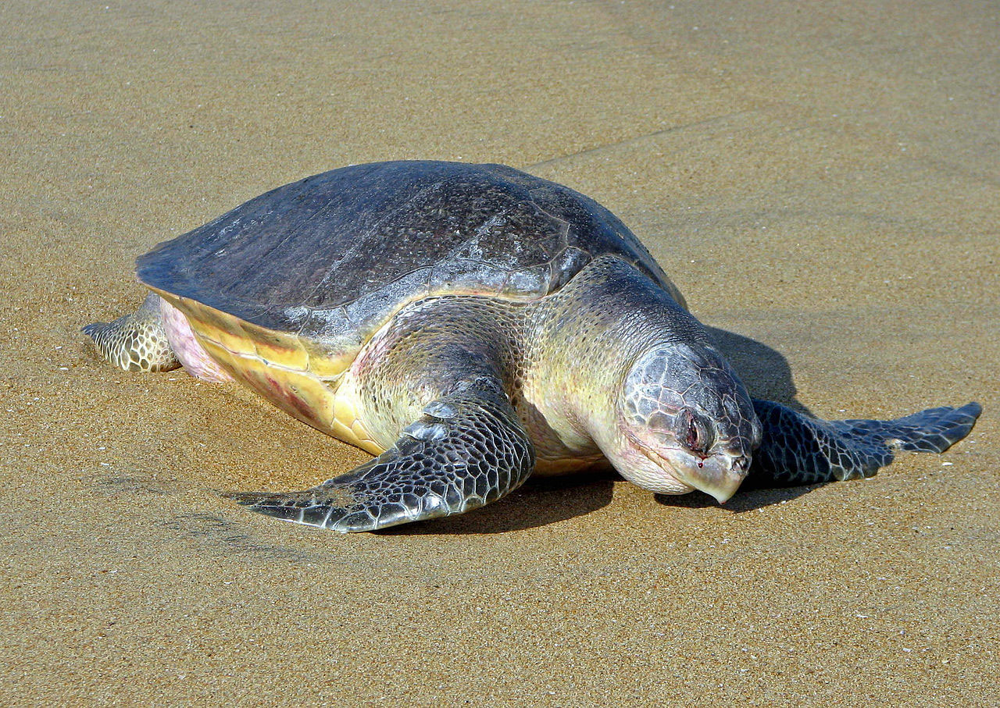
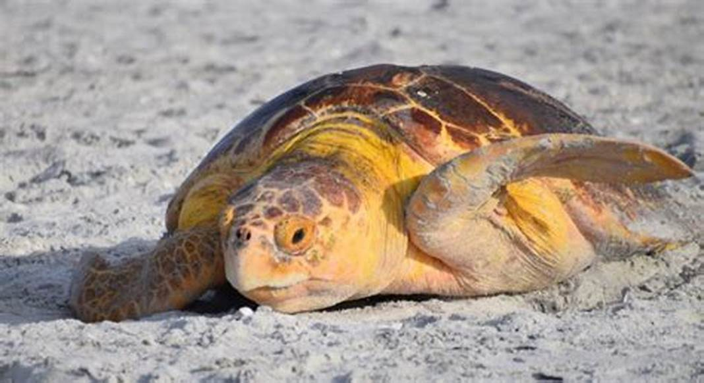
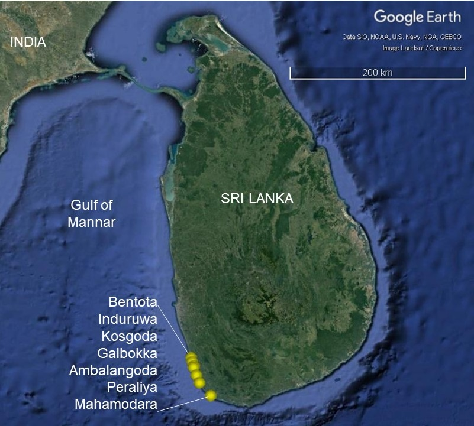
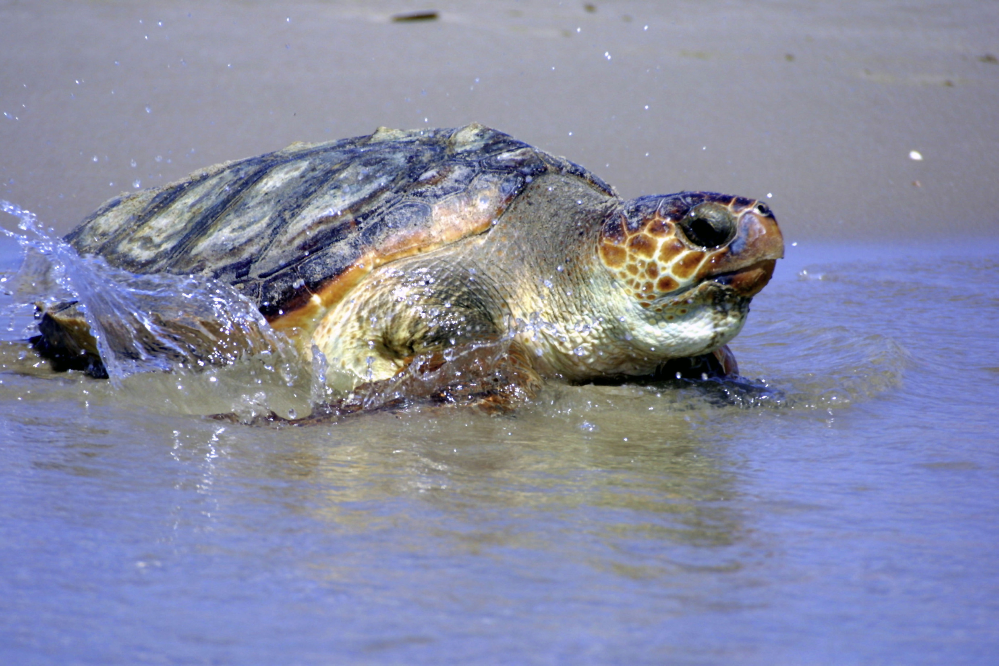

Turtle Categories in Sri Lanka
Sri Lanka is home to five out of seven species of sea turtles in the world. Each species has its own unique characteristics, habitat, and behavior.The five species of sea turtles found in Sri Lanka are the Green Turtle, Loggerhead Turtle, Hawksbill Turtle, Olive Ridley Turtle, and Leatherback Turtle. Each species plays an important role in maintaining the marine ecosystem and is facing various threats. The Green Turtle is the most common species found in Sri Lanka's waters and is known for its large size and herbivorous diet. They can weigh up to 200kg and can live up to 80 years. The Loggerhead Turtle, on the other hand, is less common and is known for its powerful jaws that can easily crush hard-shelled prey such as crabs and lobsters. The Hawksbill Turtle is a critically endangered species and is known for its beautiful shell that has been exploited for centuries for decorative purposes. The Olive Ridley Turtle is the smallest species found in Sri Lanka and is known for its synchronized nesting behavior, where thousands of turtles come ashore to lay their eggs at the same time. Finally, the Leatherback Turtle is the largest sea turtle in the world and is known for its unique shell that is covered with leathery skin instead of hard scales. They can dive to depths of up to 1,200 meters and can migrate thousands of kilometers to lay their eggs. Despite their importance in the ecosystem, all species of sea turtles face numerous threats such as habitat loss, pollution, fishing, and poaching. Conservation efforts are underway in Sri Lanka to protect these endangered species and ensure their survival for generations to come
Green Turtles
The Green Turtle, or Chelonia mydas, is one of the largest species of sea turtles and can be found in the waters around Sri Lanka. They are herbivores and feed on seagrass and algae. Green Turtles are named for the green color of their body fat, which comes from their diet.
Green Turtles are endangered and face various threats such as habitat destruction, hunting, and pollution. However, conservation efforts and turtle hatcheries like those in Sri Lanka are helping to protect and preserve this species.Green Turtles are long-lived animals that can live up to 80 years or more, and they have a slow rate of reproduction, with females only laying eggs every 2-3 years. This makes them particularly vulnerable to threats such as hunting and habitat destruction, which can have a significant impact on their populations. Turtle hatcheries in Sri Lanka often collect eggs from nesting sites and incubate them in a controlled environment until they hatch. Once the hatchlings emerge, they are kept in tanks until they are strong enough to be released into the sea. This can help to protect the hatchlings from natural predators and increase their chances of survival.
Location of beaches which has high population densities of Green Turtles
Olive Ridley Turtles
The Olive Ridley Turtle, or Lepidochelys olivacea, is the smallest of the sea turtles and can be found in the waters around Sri Lanka. They are omnivores and feed on a variety of prey such as jellyfish, shrimp, and crabs. Olive Ridley Turtles are named for the olive-green color of their shell.
Olive Ridley Turtles are listed as vulnerable and face threats such as habitat loss, fishing, and pollution. Efforts to conserve this species include the protection of nesting sites and the reduction of fishing bycatch. Olive Ridley Turtles are known for their synchronized nesting behavior, known as arribadas. Thousands of turtles come ashore to nest at the same time, usually during the nighttime. This behavior makes them particularly vulnerable to threats such as habitat loss and disturbance, as well as accidental capture in fishing nets. The population of Olive Ridley Turtles in Sri Lanka has declined in recent years, and they are now classified as vulnerable by the International Union for Conservation of Nature (IUCN). In response, various conservation initiatives have been implemented in Sri Lanka to protect this species. One such initiative is the establishment of protected areas for Olive Ridley Turtles, where nesting sites are monitored and protected from disturbance. Community-based conservation efforts, such as turtle patrols and the involvement of local communities in conservation initiatives, have also been effective in protecting Olive Ridley Turtles in Sri Lanka. In addition, awareness-raising campaigns and educational programs have been developed to increase public understanding of the importance of Olive Ridley Turtles and the threats they face. By working together to protect this species, we can ensure their survival for future generations.
Location of beaches which has high population densities of Olive Ridley Turtles
Loggerhead Turtles
The Loggerhead Turtle, or Caretta caretta, is a large species of sea turtle that can be found in the waters around Sri Lanka. They are carnivores and feed on a variety of prey such as crabs, jellyfish, and mollusks. Loggerhead Turtles are named for their large head and strong jaws.
Loggerhead Turtles are listed as vulnerable and face threats such as habitat loss, accidental capture in fishing gear, and pollution. Conservation efforts include the protection of nesting sites and the reduction of bycatch.Loggerhead Turtles are known for their long migrations, which can cover thousands of kilometers across oceans. They are also slow to mature and have a low rate of reproduction, making them particularly vulnerable to threats such as habitat loss and accidental capture in fishing gear. Conservation efforts for Loggerhead Turtles in Sri Lanka include the establishment of protected areas for nesting sites, as well as the implementation of regulations to reduce bycatch in fishing gear. Turtle excluder devices (TEDs) are also being used to reduce accidental capture of turtles in fishing gear, which can be a significant threat to their populations. In addition to these efforts, public awareness and education programs are important for the conservation of Loggerhead Turtles. By raising awareness about the threats facing these animals and the importance of their conservation, communities can work together to protect this species for future generations. Protecting Loggerhead Turtles and their habitats also has important ecological and economic benefits. As apex predators, Loggerhead Turtles play a key role in maintaining the balance of marine ecosystems, and their conservation can help to preserve the biodiversity of Sri Lanka's oceans. In addition, Loggerhead Turtles are an important attraction for eco-tourism, providing economic benefits for local communities.
Location of beaches which has high population densities of Loggerhead Turtles
Map of Turtle Nesting Beaches in Sri Lanka
Summary Table of Turtle Categories in Sri Lanka
| Turtle Category | Found in | Image |
|---|---|---|
| Green Turtles | Kalametiya Beach | |
| Olive Ridley Turtles | Kosgoda Beach | |
| Loggerhead Turtles | Rekawa Turtle Beach |  |
| You can click the any turtle category of this summary table to move to the repective section. | ||